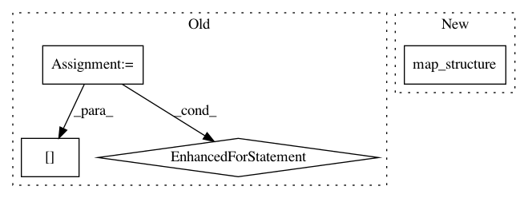

1775e89f262111791fabfd40f80a24f74738fe54,rllib/models/tf/tf_action_dist.py,MultiActionDistribution,logp,#MultiActionDistribution#Any#,371
Before Change
else:
split_indices.append(tf.shape(dist.sample())[1])
split_list = tf.split(x, split_indices, axis=1)
for i, distribution in enumerate(self.child_distributions):
// Remove extra categorical dimension
if isinstance(distribution, Categorical):
split_list[i] = tf.cast(
tf.squeeze(split_list[i], axis=-1), tf.int32)
log_list = [
distribution.logp(split_x) for distribution, split_x in zip(
self.child_distributions, split_list)
]
After Change
// Remove extra categorical dimension and take the logp of each
// component.
flat_logps = tree.map_structure(map_, split_x,
self.flat_child_distributions)
return functools.reduce(lambda a, b: a + b, flat_logps)
@override(ActionDistribution)
In pattern: SUPERPATTERN
Frequency: 3
Non-data size: 4
Instances
Project Name: ray-project/ray
Commit Name: 1775e89f262111791fabfd40f80a24f74738fe54
Time: 2020-04-28
Author: sven@anyscale.io
File Name: rllib/models/tf/tf_action_dist.py
Class Name: MultiActionDistribution
Method Name: logp
Project Name: ray-project/ray
Commit Name: 876a1ba5bd0c5570dae7de7e3334bbe85e561d17
Time: 2020-03-06
Author: sven@anyscale.io
File Name: rllib/utils/torch_ops.py
Class Name:
Method Name: convert_to_non_torch_type
Project Name: ray-project/ray
Commit Name: 732197e23a937b7b6d196936519c16ec6317ea9f
Time: 2021-03-08
Author: sven@anyscale.io
File Name: rllib/execution/train_ops.py
Class Name: TrainTFMultiGPU
Method Name: __call__